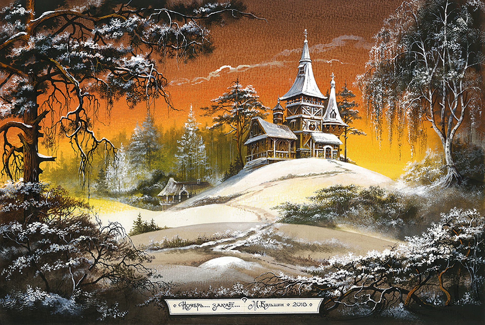
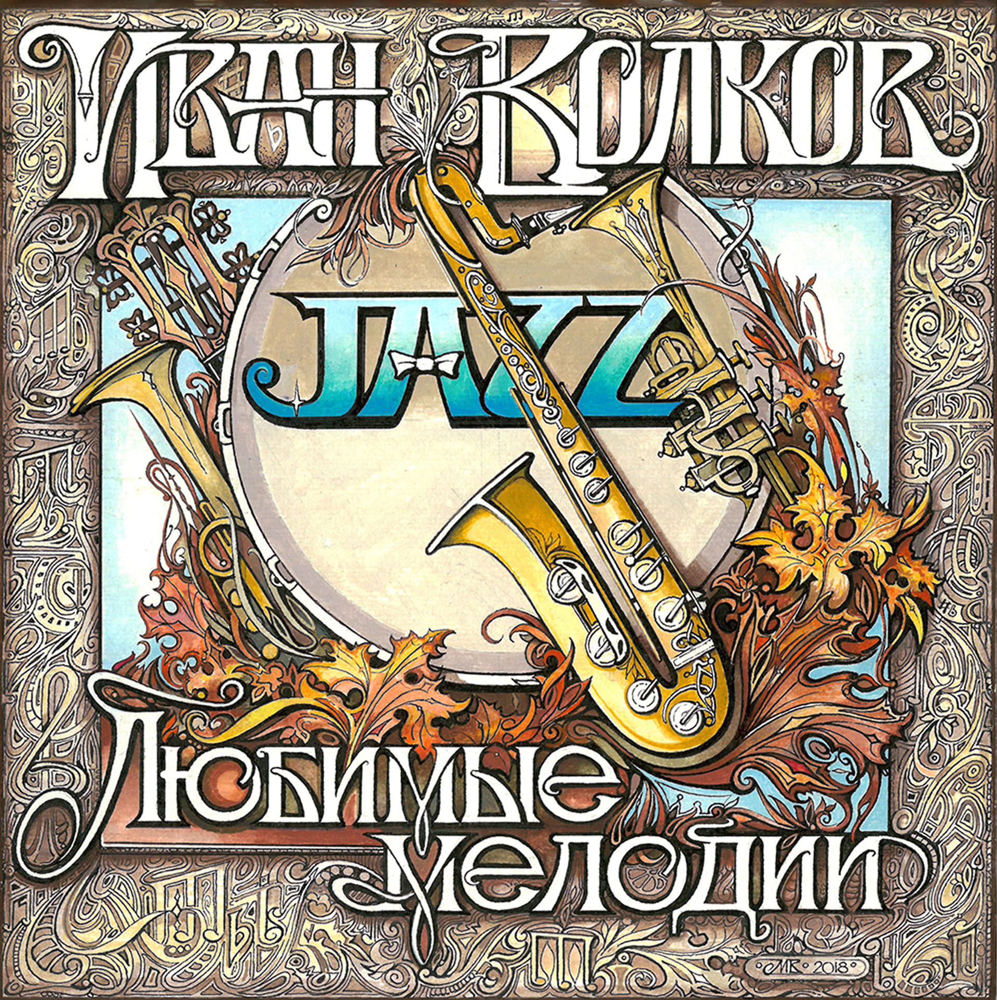
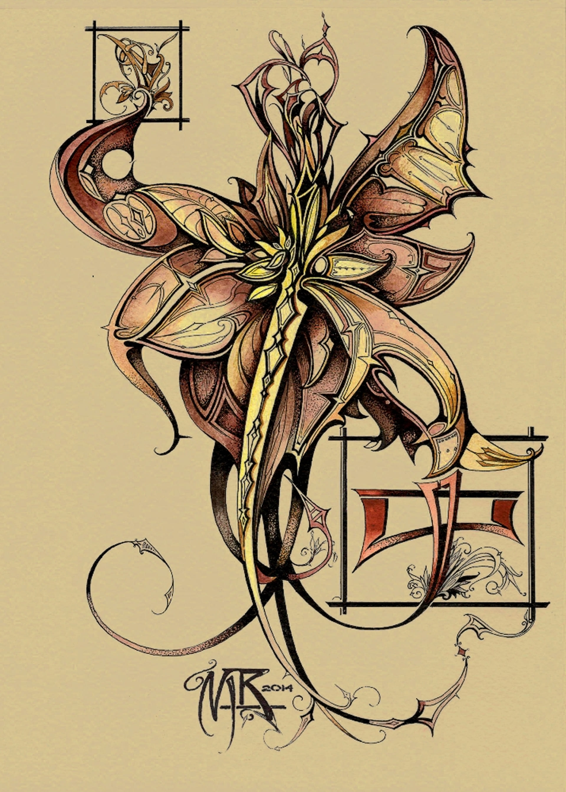
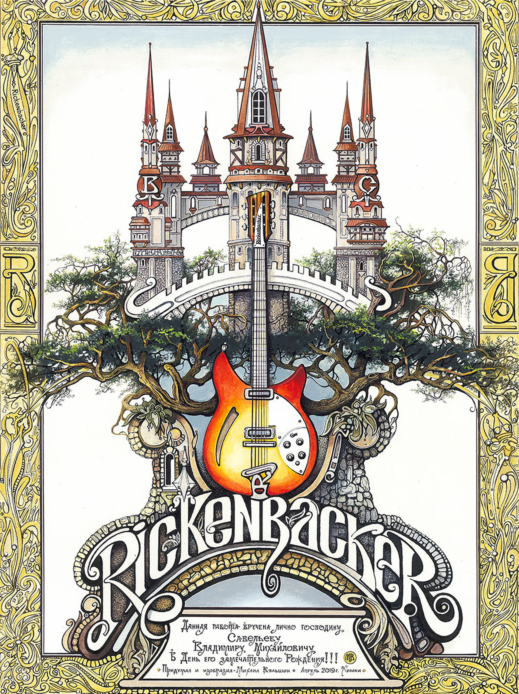
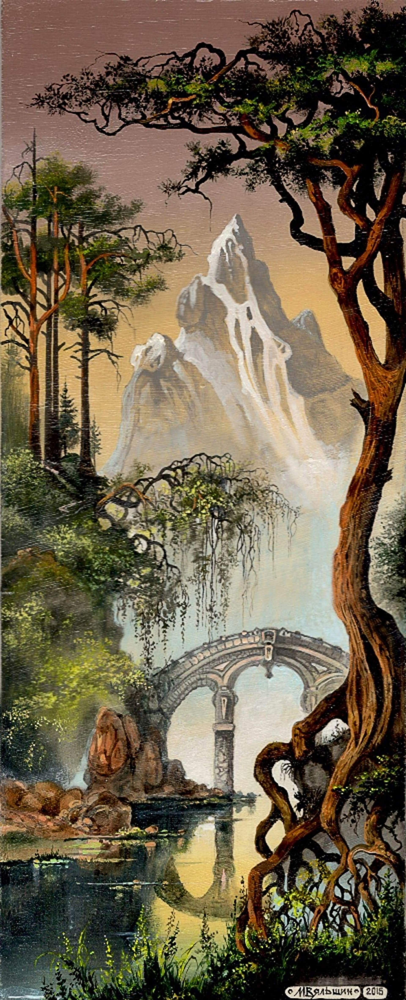
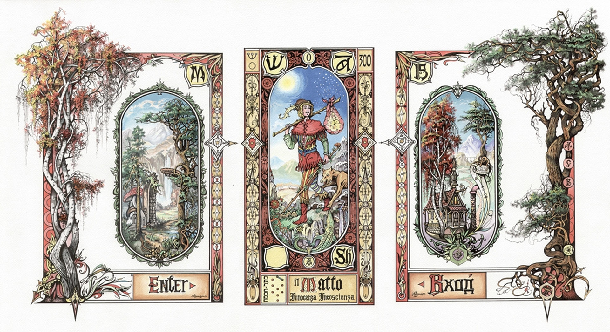
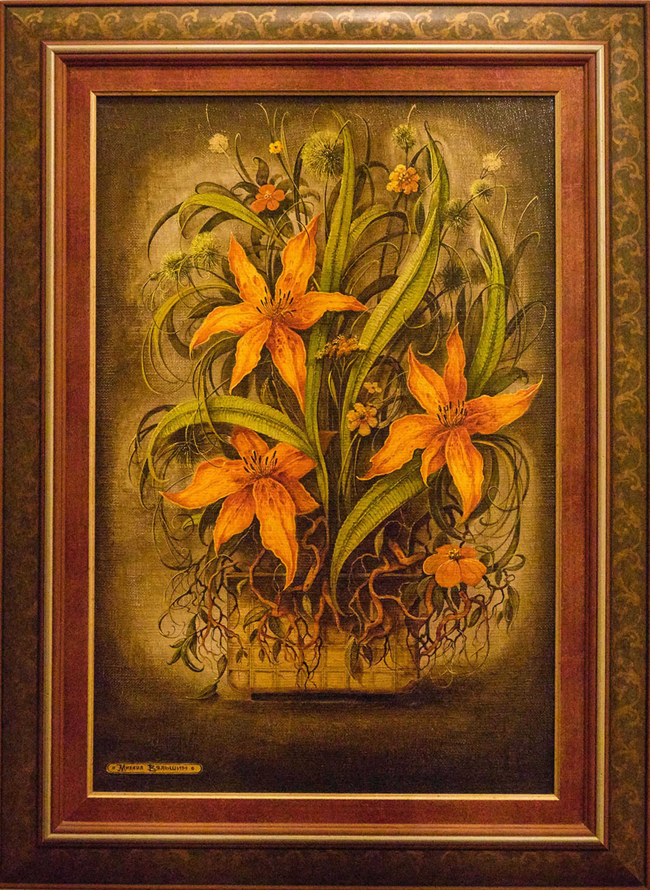
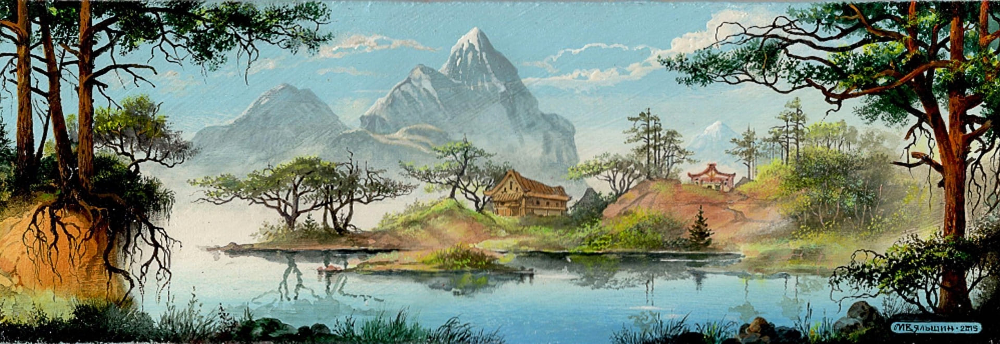

![Фантазийная композиция Михаила Вяльшина в стилистике модерна: по краям — крупные сине‑фиолетовые бабочки с орнаментальными узорами на крыльях и текучими декоративными завитками; в центре — восточный пейзаж с изогнутыми деревьями, пагодами, мостиками и архитектурными элементами, вписанными в переплетение ветвей; монохромная коричнево‑бежевая гамма пейзажа контрастирует с яркой сине‑голубой палитрой бабочек; композиция обрамлена строгой декоративной рамкой с буквенными метками; внизу — табличка с авторской подписью и датой](img/gallery-data/gallery/mikhail-vyalshin-fentezi-kompoziciya-v-stile-modern-s-babochkami-i-vostochnym-peyzazhem-2014.jpg)
![Орнаментальная буквица работы Михаила Вяльшина в эстетике модерна: крупная стилизованная цифра «55» с декоративными завитками, обрамлённая изысканной рамкой в сине‑зелёной гамме с флоральными мотивами; в центре — композиция из музыкальных атрибутов: лиры, электрогитары, раскрытой нотной тетради с партитурой и пера; в нижней части — миниатюрный архитектурный пейзаж с башнями и декоративная плашка с текстом на русском языке, включающим обращение к «уважаемому герру Wassenkoff» и фразой об опыте; проработанные детали, плавные линии и контрастная цветовая палитра подчёркивают стилистику ар‑нуво](img/gallery-data/gallery/mikhail-vyalshin-ornamentalnaya-bukvica-s-cifroy-55-i-muzykalnymi-atributami-2014.jpg)
![Орнаментальная композиция Михаила Вяльшина (2013) в стилистике модерна: в центре — симметричный декоративный элемент с крестообразной структурой и стилизованными деталями, напоминающими геральдику или сакральную геометрию; по бокам — текучие растительные формы с крупными цветами, завитками и элементами, похожими на щупальца или корни. На фоне — панорамный горный пейзаж с рекой, мостами и скалистыми утёсами в приглушённой бежево‑коричневой гамме. Композицию обрамляет сложная декоративная рамка с флоральными и абстрактными мотивами; в верхней части — миниатюрные таблички с надписями, в нижней — треугольная плашка с текстом. Тонкая графика, плавные линии и многослойная детализация подчёркивают декоративность и символизм работы](img/gallery-data/gallery/mikhail-vyalshin-ornamentalnaya-kompoziciya-v-stile-modern-s-gornym-peyzazhem-i-simvolicheskim-centrom-2013.jpg)
![Пейзаж Михаила Вяльшина (2007) с величественным водопадом: мощный поток воды обрушивается с отвесной скалы, образуя густую пелену брызг и лёгкую дымку у подножия. На переднем плане — группа высоких деревьев с изогнутыми ветвями и густой кроной; их стволы подчёркнуты тёплыми охристыми оттенками, контрастирующими с прохладной синевой падающей воды. Скалистый утёс имеет слоистую структуру и окрашен в тёплые терракотово‑бежевые тона; по склонам рассыпаны кустарники и низкорослая растительность. В верхней части полотна — светлое небо с мягкими переходами от бледно‑голубого к золотистому, создающими ощущение раннего утра. Композиция построена на контрасте динамики водопада и статичности скал и деревьев; плотная фактурная проработка мазков подчёркивает материальность природных форм](img/gallery-data/gallery/mikhail-vyalshin-majestic-waterfall-among-ancient-trees-oil-painting-2007.jpg)
![Орнаментальная композиция Михаила Вяльшина (2023) в эстетике модерна, имитирующая ажурную кованую решётку: вертикальная симметричная структура с заострённым шпилем вверху и вытянутым изогнутым завершением внизу. В центре — ярко‑оранжевый кленовый лист с детальной прорисовкой прожилок, выступающий как главный цветовой акцент; вокруг него — плавные текучие линии, стилизованные растительные формы и завитковые элементы в тёплой коричнево‑золотистой гамме. В верхней части — мотив сердца, вписанный в круглую ячейку; по бокам — крупные изогнутые лепестки с градиентной заливкой. В нижней зоне — веерообразные детали, напоминающие стилизованные крылья или складки ткани, и тонкий каплевидный элемент с сердечным мотивом. Просветы между линиями заполнены бледно‑голубым тоном, подчёркивающим воздушность и ритм узора. В правом нижнем углу — авторская монограмма «МВ» и дата «2023». Композиция сочетает декоративную сложность, изящество линий и символику осени и чувств.](img/gallery-data/gallery/mikhail-vyalshin-autumn-heart-ornament-art-nouveau-design-2023.jpg)
![Фантазийный пейзаж Михаила Вяльшина (2016) в стилистике ар‑нуво: в центре композиции — широкая каменная дорога из жёлто‑бежевых плит, сужающаяся в перспективе и ведущая к изящной арке с каллиграфической надписью «VIGENIA». По обе стороны дороги — зеркальные водоёмы с отражением изогнутых узловатых деревьев; в правой части воды проступает стилизованный мотив глаза. На среднем плане — сказочный город с белокаменными башнями, остроконечными шпилями и ажурными мостами; его архитектура сочетает готические и модерновые элементы. Фоном служат монументальные горы с заснеженными пиками и каскадными водопадами; на одном из утёсов — руинированное строение с арочными проёмами. Композицию обрамляют витиеватые растительные орнаменты в коричнево‑бежевой гамме, перекликающиеся с формами ветвей. В нижней части — декоративная табличка с рукописным посвящением, стилизованным под старинную гравюру. Палитра построена на мягких контрастах: холодные голубовато‑серые тона гор и неба уравновешены тёплыми охристыми оттенками дороги и архитектуры, а зелень листвы добавляет свежести. Тонкая детализация фактур (каменная кладка, кора деревьев, складки скал) и плавные текучие линии подчёркивают декоративную выразительность и эпическую образность работы; композиция воспринимается как символические врата в волшебную страну, где природа, архитектура и орнамент образуют единый гармоничный мир.](img/gallery-data/gallery/mikhail-vyalshin-the-gateway-to-vigenia-fantasy-landscape-art-nouveau-2016.jpg)
![Фантастическая композиция Михаила Вяльшина (2014) в стилистике ар‑нуво: в центре — причудливый архитектурный ландшафт, где природа и зодчество сливаются в единый органичный мир. На переднем плане — массивные каменные арки и мостовые опоры, увитые изогнутыми, узловатыми корнями и ветвями; между пролётами — густая поросль мха, папоротников и причудливых грибов. Слева доминирует огромное искривлённое дерево с переплетёнными стволами; в его ветвях подвешены декоративные фонари с тёплым светом, их кованые каркасы перекликаются с орнаментальной рамкой картины. В глубине композиции — многоуровневый замок с остроконечными башнями, мостиками и галереями, словно вырастающий из скал и древесных форм; фасады украшены стилизованными окнами, крестами и арками. В правой части — парящий в дымке воздушный шар, добавляющий сцене оттенок стимпанка. На площадке у арок — миниатюрные фигуры: сидящая женщина в длинном одеянии, сосуд‑урна и крошечные детали быта, создающие ощущение масштаба и тайны. Композицию обрамляет изысканная рамка в духе модерна: витиеватые завитки, стилизованные листья и декоративные медальоны в углах. В нижней части — авторские надписи в старинной типографике, включая имя художника, дату и технические данные (карандаш, акварель). Тёплая приглушённая палитра — оттенки сепии, оливкового, дымчато‑серого и янтарного — подчёркивает атмосферу сумеречного, зачарованного пространства. Тонкая штриховка, плотная детализация фактур (коры, камня, ткани, металла) и ритмичное чередование вертикальных и изогнутых линий формируют образ «царства фонарей» — таинственного убежища на границе реальности и грёзы .](img/gallery-data/gallery/mikhail-vyalshin-the-lantern-realm-art-nouveau-fantasy-architecture-2014.jpg)


![«Чайно‑кофейная утопия» (2008) — фантазийная композиция Михаила Вяльшина в стилистике модерна, исполненная тушью, акрилом и кофе на картоне. В центре — гротескный персонаж в цилиндре с нимбом, держащий жезл и окружённый символами: гитарой, табличкой «WAR MAN», витыми лентами с надписями и декоративными бабочками. Справа — причудливые фигуры с театральными позами, книгами с орнаментами и остроконечными головными уборами; между ними — крупная каллиграфическая надпись «СКОРБЬ». Композиция насыщена текучими линиями, завитками и орнаментальными элементами, создающими эффект многослойной графики; в нижней части — подпись автора, дата и технические данные работы](img/gallery-data/gallery/mikhail-vyalshin-chayno-kofeynaya-utopiya-stil-modern-fantaziya-2008.jpg)
![Пейзаж с каскадными водопадами Михаила Вяльшина (2010‑е): мощные потоки воды стремительно падают с отвесных скал, образуя густую пелену брызг и тумана у подножия. В центре композиции — три основных водопада разной высоты, подчёркивающих масштаб и динамику сцены. Окружающий ландшафт представлен причудливо изогнутыми деревьями с густой кроной, массивными валунами на переднем плане и низкорослой растительностью. Тёплая цветовая гамма строится на сочетании охристых и терракотовых оттенков скал, насыщенной зелени листвы и холодных голубых тонов падающей воды. Небо написано мягкими переходами от бледно‑голубого к золотистому, что придаёт картине атмосферу раннего утра или заката. Работа выполнена в живописной манере с выраженной фактурой и вниманием к декоративным деталям](img/gallery-data/gallery/mikhail-vyalshin-cascade-waterfalls-landscape-oil-painting-2010s.jpg)
![Каллиграфическая композиция Михаила Вяльшина (2010‑е) в технике чёрно‑белого леттеринга: в центре — стилизованная надпись на кириллице, выполненная в декоративном готико‑модерновом шрифте с выразительными засечками, контрастными утолщениями штрихов и сложными лигатурами. Композицию обрамляет асимметричный орнамент из плавных завитков, растительных побегов и геометрических ромбов; в верхней левой части — миниатюрный архитектурный элемент, напоминающий барочный картуш. В нижней зоне — переплетённые ленточные мотивы с флоральными вставками и тонкой контурной штриховкой, создающей эффект объёма. Монохромная гамма построена на градациях чёрного, тёмно‑серого и белого; акцент сделан на ритме линий, балансе пустот и плотности заполнения, а также на сочетании строгой геометрии букв и текучих органических форм декора](img/gallery-data/gallery/mikhail-vyalshin-ornamental-lettering-art-no-translation-black-and-white-2010s.jpg)
![Зимний пейзаж Михаила Вяльшина (2010‑е), написанный маслом: в центре композиции — небольшая церковь с шатровыми куполами и изящными башенками, стоящая на заснеженном холме; её тёплые охристые стены контрастируют с холодной синевой теней на сугробах. Пространство обрамляют высокие деревья — стройные берёзы с характерной белой корой и тёмные хвойные стволы; их изогнутые ветви, покрытые инеем и шапками снега, образуют естественную арку, фокусирующую взгляд на храме. На переднем плане — волнистые снежные насыпи с мягкой фактурой и тонкими тёмными контурами кустарников; по склону стелется едва заметная тропинка. В глубине — лёгкая дымка и розовато‑лиловые отсветы на дальних деревьях, создающие ощущение морозного рассвета или заката. Небо — многослойное: тёмно‑серые облака по краям плавно переходят в бледно‑голубые и розоватые тона над храмом, подчёркивая атмосферу уединённости и покоя. В левом нижнем углу — авторская подпись Вяльшина, выполненная тонкой кистью. Композиция сочетает реалистичную проработку деталей (фактура коры, кристаллики инея, складки снега) с лирической образностью, характерной для русской пейзажной традиции](img/gallery-data/gallery/mikhail-vyalshin-winter-sanctuary-church-in-snowy-forest-oil-painting-2010s.jpg)
![Сказочный пейзаж Михаила Вяльшина (2010‑е): на переднем плане — массивная берёза с выразительно изогнутым стволом и пышной кроной; её белые стволы контрастируют с тёмной, почти графичной листвой и свисающими прядями лиан. За деревом открывается панорама — стремительный водопад ниспадает с высокого утёса, образуя лёгкую дымку и пенные потоки; вода стекает в извилистую реку, петляющую по долине. На возвышении над водопадом — уютный деревянный дом в стиле русской усадьбы: остроконечные крыши, резные наличники, тёплая коричнево‑охристая гамма фасадов; чуть дальше — ещё одно строение, повторяющее архитектурный мотив. Окружающий лес — многослойный: стройные берёзы, тёмные силуэты хвойных деревьев, густые кустарники с красновато‑бордовой листвой на склоне. Вдали — мягкие очертания холмов и бледно‑жёлтое небо с лёгкими перистыми облаками, создающими атмосферу раннего утра или заката. Композиция построена на контрасте вертикали водопада и дерева с горизонталями ландшафта; декоративность подчёркнута проработкой деталей — коры, листвы, фактуры стен. Картина передаёт ощущение уединённого, почти волшебного уголка природы, где архитектура органично вписана в дикую среду](img/gallery-data/gallery/mikhail-vyalshin-the-hidden-sanctuary-waterfall-and-woodland-retreat-2010s.jpg)


![Обложка неизданного диска «Пыль Арбата» (2009) работы Михаила Вяльшина — фантазийная композиция в стилистике ар‑нуво. В центре — перспективный вид на мощёную улицу старого города с доходными домами, фонарным столбом и декоративными элементами; по бокам — стилизованные музыкальные инструменты (электрогитара и скрипка), вписанные в текучие орнаментальные завитки. Крупная надпись «ПЫЛЬ АРБАТА» выполнена выразительной каллиграфией на жёлто‑оранжевом фоне. Композиция обрамлена сложной рамкой с флоральными мотивами, в верхней и нижней частях — текстовые плашки с авторскими комментариями и техническими пометками. Тёплая палитра с акцентами охры, зелёного и коричневого подчёркивает декоративность работы](img/gallery-data/gallery/mikhail-vyalshin-oblozhka-diska-pyl-arbata-stil-ar-nuvo-2009.jpg)
![Архитектурно‑пейзажная композиция Михаила Вяльшина (2010‑е) в стилистике модерна: слева — изящный особняк на склоне с выразительным силуэтом и декоративными деталями, органично вписанный в рельеф; по центру — стилизованные деревья с изогнутыми ветвями, кроны которых решены как орнаментальные массы; справа — монументальные вертикальные формы, напоминающие руины или абстрактные колонны, растворяющиеся в дымке. По краям и в структуре композиции — сложные декоративные рамки и элементы с завитками, флоральными мотивами и геометрическими вставками; в левой части — фрагмент архитектурного фонаря с узорными решётками. Колорит построен на сочетании охристых, терракотовых и бежевых тонов скал и фасадов, контрастирующих с холодной серо‑голубой гаммой неба и теней. Тонкая контурная графика, многослойная проработка деталей и синтез пейзажа с орнаментом подчёркивают декоративность и символизм работы](img/gallery-data/gallery/mikhail-vyalshin-architectural-landscape-in-art-nouveau-style-with-ornamental-frames-2010s.jpg)

![Фантазийная архитектурная композиция Михаила Вяльшина в стилистике модерна: в центре — многоуровневый ансамбль из причудливых зданий с остроконечными шпилями, изогнутыми крышами и декоративными башенками, словно вырастающих из витых органических форм. Композицию поддерживают массивные стилизованные колонны с ажурными капителями, между которыми пролегают волнообразные линии, напоминающие потоки энергии или застывшие волны. Верхняя часть занята группой домиков с детализированной проработкой фасадов, обрамлённых завитками листвы и растительными мотивами; над ними — вытянутые шпили с золотистыми навершиями. По периметру — широкая орнаментальная рамка с кельтскими переплетениями и флоральными узорами в тёплой гамме охры, золота и тёмно‑коричневого. В нижней зоне — рукописная надпись на русском языке, посвящённая сокурснику художника; текст органично вписан в декоративный бордюр. Тонкая контурная графика, ритмичные повторы мотивов и плавные текучие линии подчёркивают декоративную сложность и символизм работы; композиция воспринимается как архитектурный гимн воображаемому городу, где природа и зодчество сливаются в едином орнаменте.](img/gallery-data/gallery/mikhail-vyalshin-the-city-of-whispering-spires-art-nouveau-fantasy-architecture-2010s.jpg)
![Фантазийный монохромный пейзаж Михаила Вяльшина (2014) в стилистике тёмного фэнтези и ар‑нуво: на переднем плане — массивная каменная дверь в декоративной раме, словно портал в иной мир; её окружают изогнутые, узловатые корни и ветви, покрытые снежными шапками. Слева и по периметру — причудливые деревья с экспрессивными, почти живыми формами крон и стволов, чьи линии перекликаются с орнаментальной графикой рамки. В центре композиции — монументальный арочный виадук, отражённый в спокойной глади воды; его ритмичные пролёты задают глубину и перспективу. На возвышении справа — сказочный замок с остроконечными башнями, сложной кровлей и декоративными элементами, органично вписанный в скалистый рельеф. На фоне — заснеженные горные пики, растворяющиеся в дымке; небо трактовано мягкими тональными переходами, создающими ощущение раннего утра или сумерек. В левом верхнем углу — авторская табличка с надписью «Пейзаж с замком» и пометкой «Таинство», в правом нижнем — подпись художника, дата «01.07.2014» и технические данные работы. Тонкая штриховка, контрастные светотени и плотная детализация (фактура камня, коры, черепицы) подчёркивают графическую выразительность и мистическую атмосферу; композиция воспринимается как приглашение к путешествию в скрытое, заповедное королевство, где природа и архитектура образуют единый загадочный ландшафт](img/gallery-data/gallery/mikhail-vyalshin-the-mysterious-gateway-to-the-castle-realm-fantasy-landscape-2014.jpg)
![Графическая миниатюра Михаила Вяльшина (2014), выполненная тушью и пером в стилистике ар‑нуво: композиция обрамлена сложным орнаментом из изогнутых ветвей, корней и свисающих растительных форм, создающих эффект «живой» рамы. В центре — идиллический пейзаж: деревянный домик с крутой крышей и дымящейся трубой на холме, изящный арочный мостик над спокойной водой, стилизованные вазоны и балюстрады на переднем плане. На фоне — лесная роща, лёгкая дымка и крупный светлый диск луны, задающий мистическую атмосферу. В нижней части — авторские надписи и технические данные: указание на серию «В.И.Ф.», материалы («тушь, перо, кисть, бумага Fabriano»), дату (13 марта 2014) и место создания (Зеленоград), а также размер миниатюры (274 × 195 мм). Тонкая штриховка, контрастные чёрные контуры и плотная детализация (фактура коры, кладки, кровли) подчёркивают декоративную выразительность и графическую чёткость работы; плавные текучие линии орнамента перекликаются с природными формами, формируя гармоничный синтез архитектуры и ландшафта. Монохромная палитра и вертикальная динамика растительных элементов усиливают ощущение уединённого, почти сказочного убежища, скрытого от внешнего мира за витиеватой завесой ветвей](img/gallery-data/gallery/mikhail-vyalshin-the-moonlit-sanctuary-art-nouveau-ink-miniature-2014.jpg)
![Фантастическая композиция Михаила Вяльшина (2014) в стилистике ар‑нуво: в центре — двухэтажный дом с каменной нижней частью и деревянной верхней, органично вписанный в причудливый ландшафт. Пространство вокруг здания пронизано массивными изогнутыми корнями, стволами и ветвями, чьи текучие линии формируют декоративную раму всей картины. На переднем плане — свисающие плети мха, фактурные наросты коры и миниатюрные растительные детали, подчёркивающие масштаб и сказочность сцены. В глубине — многоуровневый архитектурный ансамбль: башни с остроконечными крышами, арочные виадуки и лёгкие мостики, растворяющиеся в дымке. В верхней части композиции — стилизованное солнце в орнаментальной розетке и крупная фантастическая бабочка с узорчатыми крыльями, чьи мотивы перекликаются с растительными завитками. По периметру картины — сложная рамка из переплетённых древесных форм с миниатюрными архитектурными вставками и декоративными медальонами. В правом нижнем углу — авторская табличка с подписью художника и датой. Тёплая палитра на основе коричнево‑золотых, оливковых и дымчато‑серых тонов дополнена контрастными чёрными контурами, усиливающими графическую чёткость и декоративность. Плотная детализация фактур (камень, дерево, листва, металл фонарей) и ритмичное чередование вертикальных и изогнутых линий создают образ «переплетённого царства» — мистического пространства, где архитектура и природа образуют единый живой организм](img/gallery-data/gallery/mikhail-vyalshin-the-entwined-realm-art-nouveau-fantasy-architecture-2014.jpg)


![Фантастический пейзаж Михаила Вяльшина (2011) в стилистике модерна: в центре — парящий домик с островерхой крышей, вписанный в текучие орнаментальные завитки; слева — массивное изогнутое дерево с заснеженными ветвями, выполненное в экспрессивной графической манере; на фоне — туманные горы и бледное солнце, создающие атмосферу загадочности. Композицию обрамляет сложная декоративная рамка с флоральными и геометрическими мотивами; в верхней и нижней частях — плашки с авторскими надписями. В правой части — стилизованный цветочный элемент с тонкими расходящимися линиями; в нижней зоне — абстрактные конструкции, напоминающие архитектурные детали. Тёплая бежево‑коричневая палитра с контрастными чёрными контурами подчёркивает декоративность и многослойность работы](img/gallery-data/gallery/mikhail-vyalshin-fantasticheskiy-peyzazh-v-stile-modern-s-domikom-i-snegom-2011.jpg)
![Иллюстрация Михаила Вяльшина (2010‑е) в стилистике модерна: в центре композиции — стилизованная лиса с пламенеющим мехом (оранжево‑жёлтые переливы), выступающая как мистический страж; за ней — сказочный замок с вытянутыми шпилями, декоративными фронтонами и флагами, органично вписанный в горный ландшафт. Композицию обрамляет орнаментальная рамка из изогнутых древесных корней и ветвей с флоральными завитками; в верхней и нижней частях — фигурные картуши с рукописным текстом. На дальнем плане — туманные горные пики и силуэт парящего города на утёсе. Тонкая контурная графика, многослойная детализация и синтез зооморфного образа с архитектурно‑декоративными формами подчёркивают символизм и декоративную выразительность работы](img/gallery-data/gallery/mikhail-vyalshin-fox-guardian-of-the-mystical-castle-art-nouveau-illustration-2010s.jpg)
![Акриловая работа Михаила Вяльшина (2009) в стилистике модерна, созданная как валентинка: в центре — сказочный замок с вытянутыми шпилями и декоративными башенками, отражённый в спокойной глади воды; композицию пересекает арочный мост с ритмичными пролётами. Пространство обрамлено причудливо изогнутыми древесными стволами и переплетёнными ветвями, в которые органично вписаны золотистые орнаментальные сердца и кельтские узоры. Справа — стилизованный силуэт птицы с детализированным оперением; в верхней части — лёгкие силуэты деревьев, подчёркивающие воздушность фона. В нижней зоне — авторская надпись в фигурной рамке: «Обожаемой мной Нине в День Святого Валентина приготовлена картина — Коое да, акрил. Л/З. 2009». Тёплая коричнево‑охристая палитра с акцентами золотого создаёт атмосферу уюта и романтической тайны; тонкая контурная графика и многослойная проработка деталей подчёркивают декоративную выразительность и символизм композиции](img/gallery-data/gallery/mikhail-vyalshin-valentine-castle-of-hearts-art-nouveau-acrylic-2009.jpg)
![Декоративная композиция Михаила Вяльшина (2016) в стилистике ар‑нуво: в центре — крупная стилизованная монограмма, выполненная в строгой чёрно‑белой графике с ритмичными вертикалями и плавными завитками; она помещена в овальный медальон, который служит визуальным ядром всей работы. Композицию обрамляет сложная орнаментальная рамка с растительными мотивами: изогнутые ветви с детальной проработкой коры, цветы с многослойными лепестками и тонкие вьющиеся стебли образуют непрерывный узор, перетекающий от края к краю. Слева — фантазийный архитектурный элемент, напоминающий миниатюрный готико‑модерновый павильон с остроконечным завершением и ажурными деталями; справа — плотная группа стилизованных цветов в тёплой розово‑коричневой гамме. В верхней части — лаконичные геометрические вставки с растительными акцентами, подчёркивающие симметрию и ритм; в нижней — узкая полоса с рукописным текстом и авторской монограммой «МВ», а также датой «2016». Палитра построена на сочетании приглушённого зелёного фона, землистых коричневых и бежевых тонов, контрастных чёрных линий и нежных розовых акцентов. Тонкая контурная графика, плавные текучие линии и плотная детализация подчёркивают декоративную выразительность и преемственность традиций модерна; композиция воспринимается как изысканная графическая фантазия, объединяющая каллиграфию, архитектуру и природный орнамент.](img/gallery-data/gallery/mikhail-vyalshin-ornamental-monogram-art-nouveau-frame-2016.jpg)
![Фантазийная иллюстрация Михаила Вяльшина (2014) в стилистике ар‑нуво: в центре композиции — парящая платформа‑корабль с башнями, мостиками и декоративными надстройками; на палубе — стилизованный чайный сервиз и абстрактные архитектурные формы, отсылающие к теме «чайных проводов». Справа — монументальный извивающийся дракон с орнаментальной чешуёй, чьи линии перекликаются с растительными завитками рамки; слева — вертикальный блок с миниатюрными домиками, фонарём и переплетёнными корнями, создающими ощущение волшебного города. Композицию обрамляет сложная декоративная рамка с текучими, «живыми» контурами, характерными для модерна; в верхней и нижней частях — текстовые плашки с авторской стилизацией под старинную типографику, включая фразу «Чайные проводы драконессы Повлент» и ироничную ремарку о чаепитии. В правой части — парусник с жёлтыми парусами, органично вписанный в фантастический ландшафт; между элементами — тонкие растительные мотивы, капли воды и лёгкие облака, усиливающие декоративность. Палитра построена на тёплой коричнево‑золотой гамме с акцентами охры, янтаря и тёмно‑серого; контрастные чёрные контуры подчёркивают графическую чёткость и детализацию (фактура дерева, камня, чешуи, ткани парусов). Плотная проработка мелких деталей, ритм вертикальных и изогнутых линий, а также синтез архитектуры, морской тематики и драконьей мифологии формируют образ сказочного ритуала — торжественных «проводов», где чай выступает символом перехода и прощания](img/gallery-data/gallery/mikhail-vyalshin-the-tea-farewells-of-the-dragoness-povlent-art-nouveau-fantasy-illustration-2014.jpg)
![Фантазийная иллюстрация Михаила Вяльшина (2014) в стилистике ар‑нуво: композиция заключена в изысканную декоративную рамку из текучих, изогнутых линий и растительных завитков в сине‑зелёной гамме. В центре — мистический пейзаж: массивный извивающийся дракон с детализированной чешуёй, чьи формы перекликаются с корнями и древесными стволами; над ним — вытянутая башня с остроконечным шпилем и удлинёнными «тревожными» глазами на фасаде, создающими ощущение одушевлённости архитектуры. В верхней части — призрачный лик с длинными спутанными прядями, словно сотканный из тумана и тонких линий; в нижних углах — два стилизованных медальона с орнаментальными мотивами, напоминающими лунные диски или магические печати. Пространство между элементами заполнено каскадами свисающих побегов, мха и ажурных переплетений, формирующих эффект «живой» границы между мирами. Тонкая штриховка, контрастные чёрные контуры и деликатная цветовая палитра (приглушённые бирюзовые, коричнево‑охристые и дымчато‑серые тона) подчёркивают декоративную сложность и графическую выразительность работы. Ритмичное чередование вертикальных осей башни и плавных изгибов дракона создаёт напряжённый баланс между статикой и движением, раскрывая тему противостояния и единства стихий — камня и огня, порядка и хаоса. Плотная детализация фактур (чешуя, каменная кладка, волокнистые пряди, лиственные завитки) и авторская подпись в нижней части усиливают ощущение ручной, ювелирной проработки каждой линии .](img/gallery-data/gallery/mikhail-vyalshin-the-dragon-and-the-tower-art-nouveau-fantasy-illustration-2014.jpg)
![Фантазийная иллюстрация Михаила Вяльшина (2011) в стилистике ар‑нуво из серии «Восточно‑европейские картинки»: композиция заключена в изысканную декоративную раму с текучими растительными завитками и орнаментальными медальонами. В центре — мистический ландшафт: изогнутый ажурный мост с узорчатыми перилами ведёт к башне с восточным силуэтом, словно вырастающей из переплетения корней и каменных уступов. По обе стороны — искривлённые, почти скелетообразные деревья с редкой осенней листвой; их ветви органично переходят в линии орнамента, стирая границу между пейзажем и рамкой. В правой части — стилизованный дракон с вытянутой шеей и витиеватым телом, чьи формы рифмуются с завитками узоров; в левой — полупрозрачный круг, напоминающий луну или магический портал, добавляющий сцене ощущение тайны. В верхней части — декоративная табличка с авторской надписью в старинной типографике, в нижней — раскрытая книга с рукописным текстом и орнаментальными вставками, символизирующая знание и повествование. Тёплая приглушённая палитра (охристые, коричнево‑серые, дымчато‑голубые тона) подчёркивает осеннюю меланхолию и сказочную отстранённость пространства. Плотная детализация фактур (кора, каменная кладка, чешуя, витые линии узоров) и ритмичное чередование вертикальных стволов и плавных изгибов создают образ «врат в забытое царство» — пограничного пространства между реальностью и легендой, где архитектура, природа и миф сливаются в единую декоративную симфонию .](img/gallery-data/gallery/mikhail-vyalshin-the-gateway-to-the-forgotten-realm-art-nouveau-fantasy-illustration-2011.jpg)
![Декоративная иллюстрация Михаила Вяльшина (2023) в стилистике ар‑нуво: в центре — изящная ваза вытянутой формы с плавными изогнутыми контурами и орнаментальными завитками у основания и горловины. В вазе — букет белых лилий с детально прорисованными лепестками и выразительными тычинками с красновато‑коричневыми пыльниками; цветы расположены асимметрично, что придаёт композиции динамику. Вокруг стеблей и между лепестками — текучие растительные линии и спирали в приглушённых зелёно‑оливковых и серо‑голубых тонах, органично переходящие в декор вазы и создающие эффект единого орнаментального потока. Лёгкая штриховка и мягкие цветовые переходы подчёркивают объём и воздушность форм. В правом нижнем углу — авторская монограмма и дата «2023», выполненные в характерной для стиля каллиграфической манере. Тёплая бежевая подложка фона усиливает контраст с белыми цветами и тёмными контурами, акцентируя декоративную выразительность работы. Композиция воплощает эстетику модерна — гармонию природной формы и художественного узора, где каждый элемент подчинён плавному ритму изогнутых линий.](img/gallery-data/gallery/mikhail-vyalshin-lilies-in-the-art-nouveau-vase-decorative-illustration-2023.jpg)


.jpg)